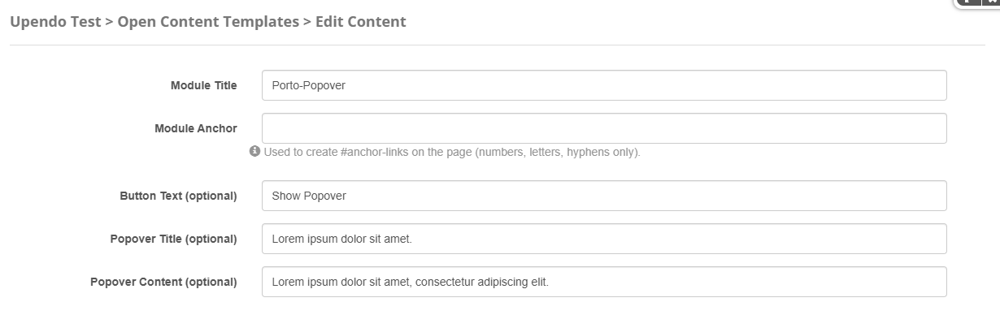
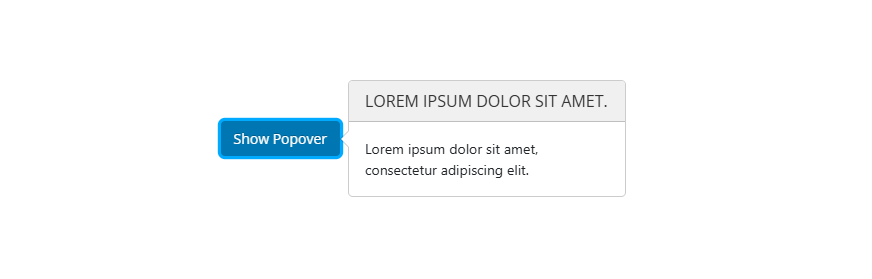

Porto-Popover Documentation
Table of Contents
Overview
The Porto-Popover component allows you to add a customizable button with selectable colors and a popover that appears to the right. The popover can include a user-defined title and content, enhancing the display of contextual information in the interface. Porto defines the appearance and behavior of the popover, while its implementation is managed through OpenContent, providing greater flexibility and customization.
For more details, check out the Porto-Popover repository on GitHub or the Porto documentation.
Usage Example
Edit
Properties
| Field Name | Type | Description | Required |
|---|---|---|---|
| Button | String | Button Text (optional) | No |
| PopoverTitle | String | Popover Title (optional) | No |
| PopoverContent | String | Popover Content (optional) | No |
Settings

Settings Properties
| Setting | Type | Description |
|---|---|---|
| ButtonColor | Select | Specifies the color of the button.
|
Views
Notes
Note: Keep the following in mind when using the Porto-Popover component:
- Ensure that the
ButtonColorsetting is selected appropriately to align with your website's theme and design. - Provide meaningful content for
PopoverTitleandPopoverContentto enhance user experience and deliver relevant information. - Test the responsiveness of the component on different devices to ensure proper display and functionality.
- Use the predefined button styles (e.g.,
btn-primary,btn-success, etc.) to maintain consistency with the component's design language.